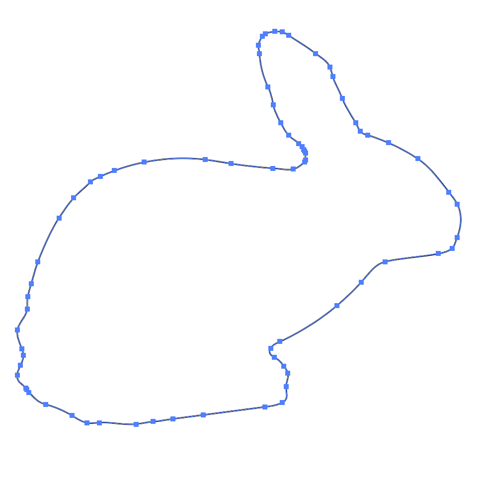
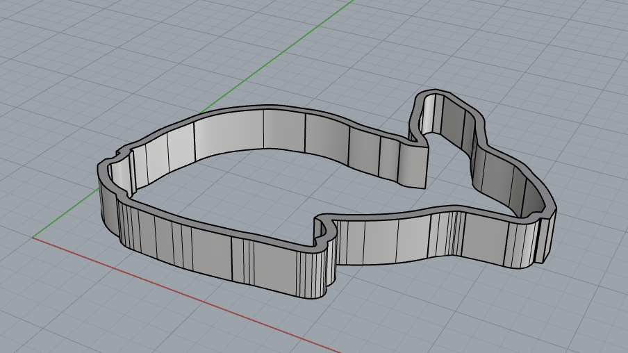

Cookie Cutters
For assignment 1, I decided to make a trio of cookie cutters in the shape of animals using Rhino modeling software. The animals I chose were a bunny, a chow chow, and a red panda.


First, I found an image on the internet of the animals I wanted to make.


Next, I adjusted the levels, threshold, saturation, and color until I was satisified that the image would trace easily in Illustrator.



Once in Illustrator, I live traced the object, creating the vector points. Once I was satisified with the
vector files I exported the shapes as .dxf files.


Next, I imported the .dxf file into Rhino. I exploded the shape so I could see the vector points, and make sure my objects were closed.


Then I used the offset function to create an outer wall (.1").



Once I had my outerwall, I used the extrude function to create the height (.5") and make solid shapes. I then exported the files as .stl. A few weeks later, I was able to successfully print my cookie cutters.
In the coming weeks I would like to learn how to add a handle to my cookie cutters to make a more accessible version for people who have dexterity or mobility issues.
A special thanks to Junchao who helped me through this process!
Below are the links to the rhino files, .stl files, .dxf files, and .jpeg images.
Bunny
Rhino modelJpeg
STL
DXF
Red Panda
Rhino modelJpeg
STL
DXF
Chow Chow
Rhino modelJpeg
STL
DXF